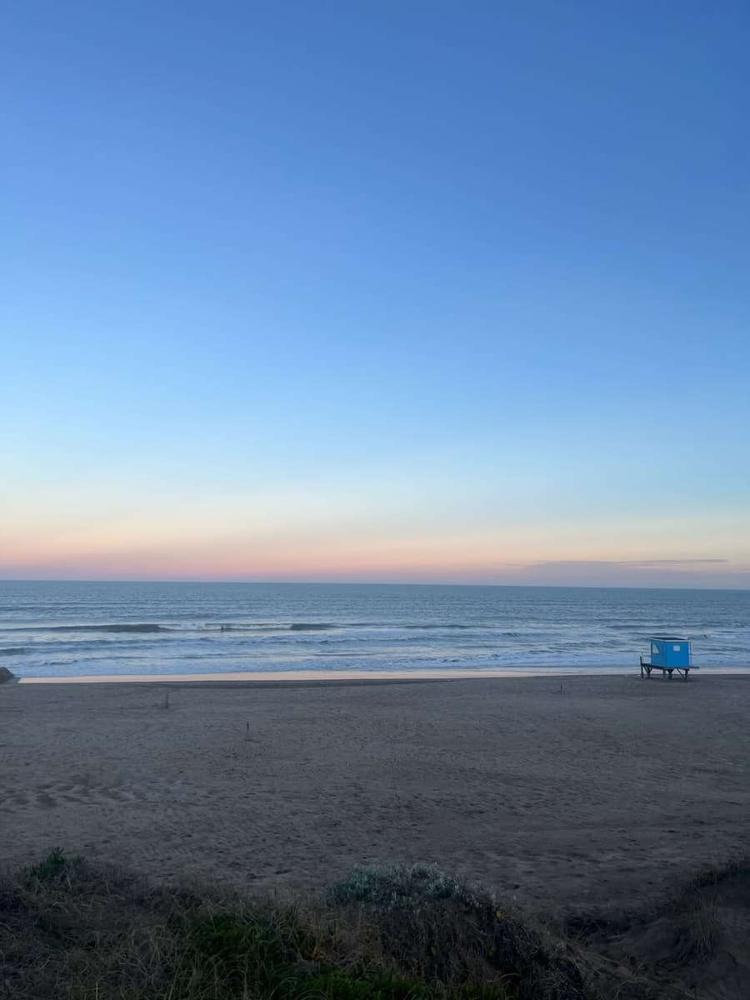
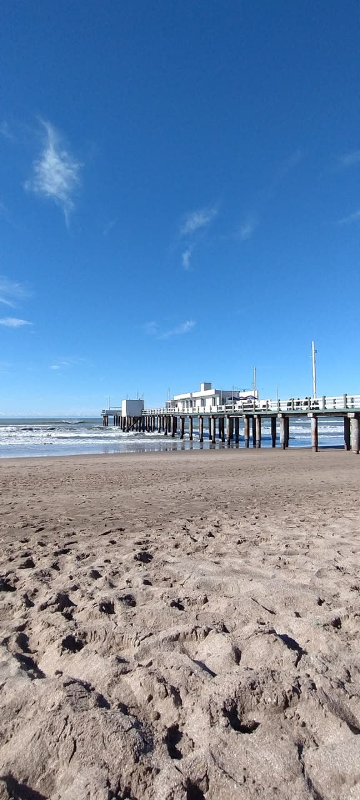
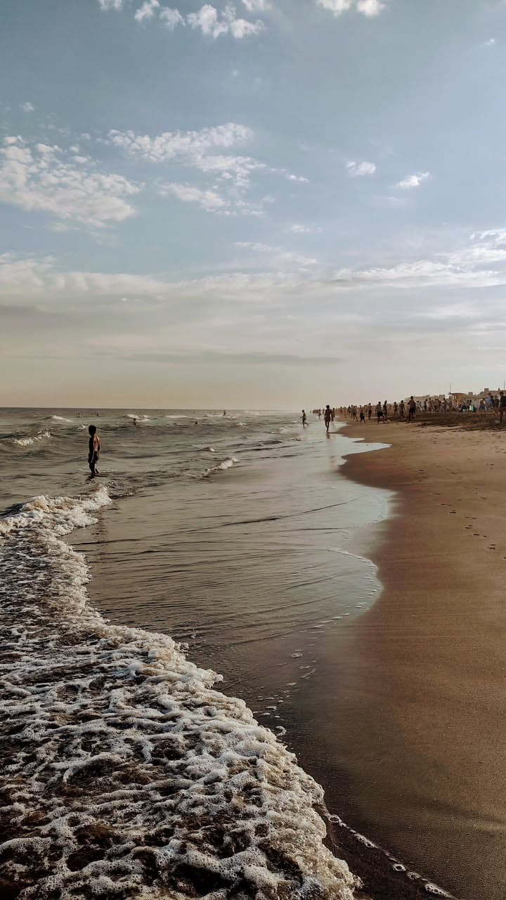
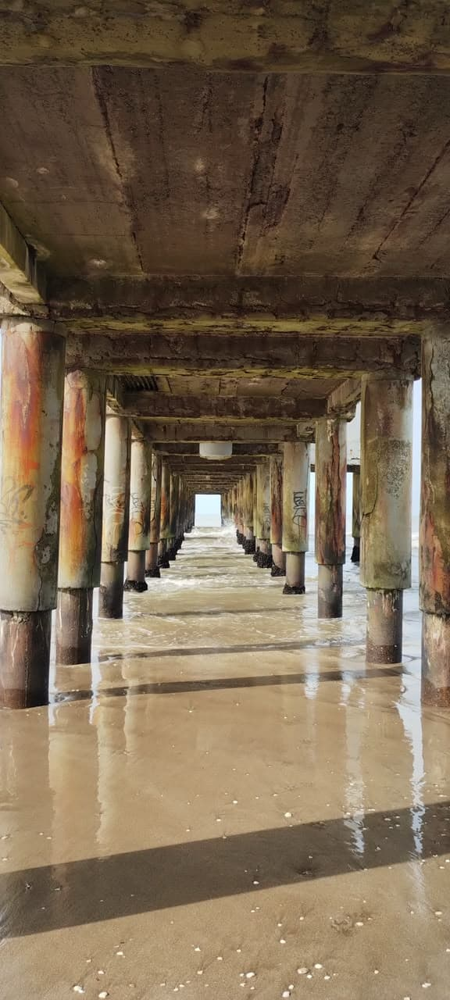
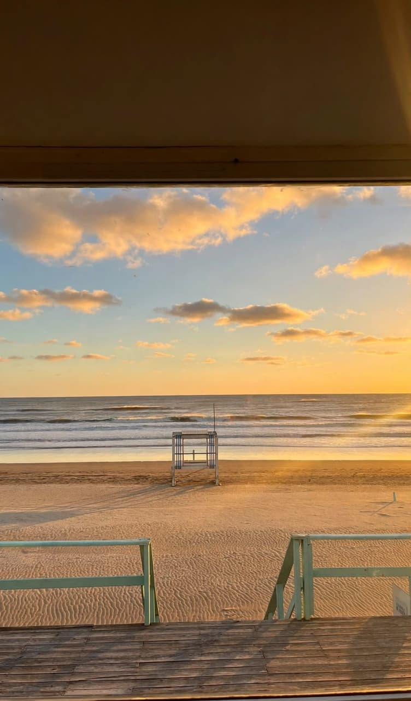
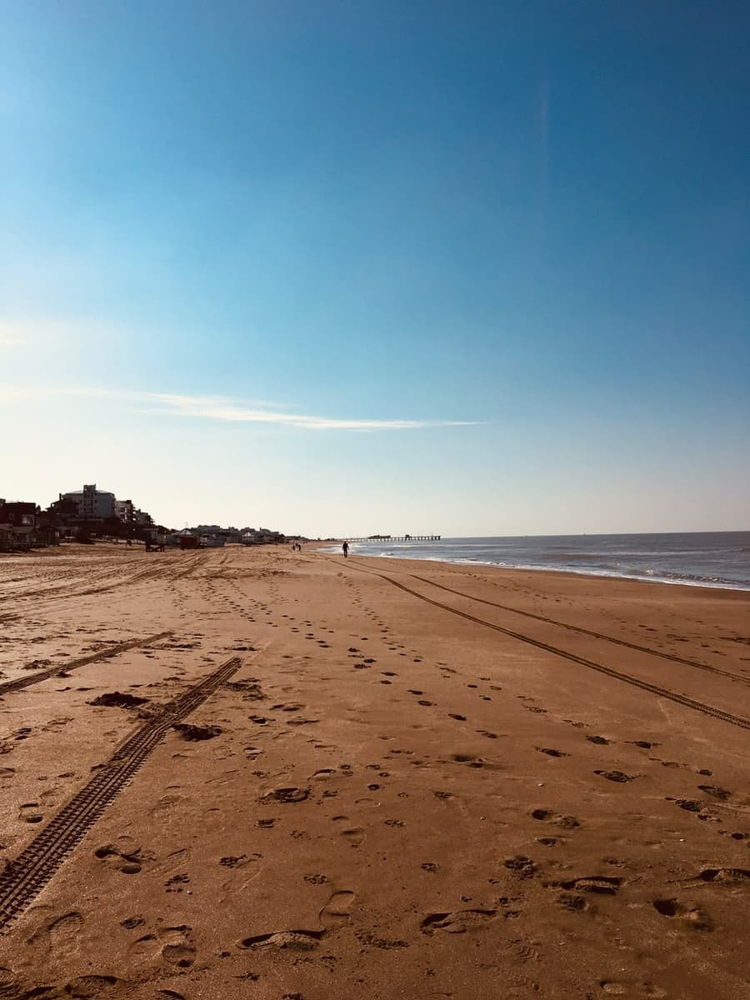
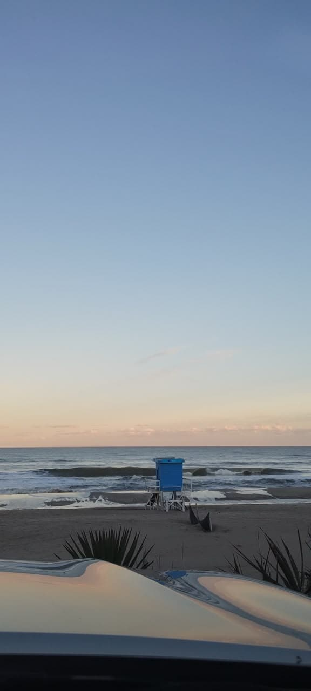
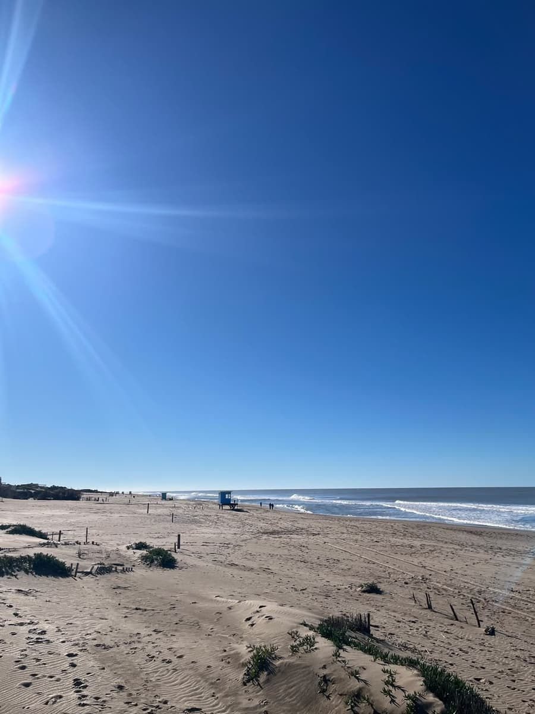

La mañana en Pinamar arranca tranquila. Temprano la playa todavía está casi vacía, el mar suele estar más calmo y el aire está fresco. Es la hora de los que salen a correr por la orilla, de los que pasean al perro y de los surfistas que quieren aprovechar las primeras olas.
A media mañana empieza a llegar la gente con las sombrillas y las reposeras, y los paradores abren para el desayuno. Por eso elegimos empezar el recorrido acá: el mar es, junto con los pinos, lo que más identifica a Pinamar.
En esta parada
Horario sugerido: 9 a 12 h
Duración: 2 a 3 horas
Costo: la playa es gratis, las clases se pagan
Para quién: familias y grupos de amigos
Qué llevar: protector solar, agua y un buzo

El día arranca en la playa, a la hora en que está más tranquila y el agua suele estar más calma.
Pinamar es uno de los lugares del país más elegidos para hacer surf y kitesurf, porque las playas
son anchas, hay buenas olas y casi siempre hay viento.
En todo el partido hay 12 escuelas de surf: seis en Pinamar, dos en Valeria del Mar y cuatro en
Cariló. No hace falta tener experiencia, hay clases para chicos, jóvenes y adultos.
Las clases se hacen en grupos chicos y siempre con un instructor al lado. Para los chicos hay clases de iniciación más cortas, en la orilla y con olas chiquitas, así que pueden aprender mientras los grandes miran desde la arena.
Para los que ya saben, la mañana es el mejor momento para alquilar una tabla y salir solos. También se puede probar kitesurf o paddle surf, que aprovechan el viento que casi siempre hay en la costa.

Si no te querés meter al agua también está bueno. Se puede caminar por el paseo costero, que va por
la playa desde Bunge y Av. del Mar hacia el sur hasta el muelle. Ahí siempre hay pescadores y es un
buen lugar para sacar fotos.
La caminata es tranquila y se hace descalzo por la arena húmeda, que es más firme. En el camino se pasa por varios paradores y bajadas a la playa, así que si te cansás podés frenar a tomar algo o volver por la calle.
El muelle es uno de los lugares más lindos de Pinamar para ver el mar desde arriba. Desde ahí se ve toda la costa, los surfistas en el agua y, si el día está despejado, la playa hasta muy lejos.
Es un plan que se puede hacer a cualquier edad y no cuesta nada, así que está bueno para combinar: mientras unos toman la clase de surf, otros pueden hacer la caminata y encontrarse después en el parador.
Algo que conviene saber: a la mañana el viento suele estar más tranquilo que a la tarde, y por eso muchas escuelas arrancan temprano. Si vas en temporada alta, también vas a encontrar la playa con menos gente y más lugar para armar la sombrilla.
Si nunca te subiste a una tabla, no te preocupes. La primera clase arranca en la arena: el instructor explica cómo acostarse en la tabla, cómo remar y cómo pararse. Después se entra al agua en una zona donde se hace pie y con olas chicas. Lo normal es caerse bastante las primeras veces, así que tomalo con calma.
En todo el partido hay 12 escuelas de surf, así que en verano siempre hay alguna cerca.
Qué hacer
Clases para chicos
Las escuelas tienen clases de iniciación para los más chicos, con instructor y equipo.
Juegos y desayuno
Jugar en la orilla y desayunar en algún parador mirando el mar.
Surf o bodyboard
Clases grupales, está bueno para aprender todos juntos.
Kitesurf y paddle surf
Aprovechando el viento que hay casi siempre en la costa.
Alquiler de tablas
Para los que ya saben y quieren ir por su cuenta.
Escuelas de surf
Estas son algunas de las escuelas que hay en Pinamar. Las clases se reservan por WhatsApp o por redes.
Escuela
Dónde está
Sudestada
Olimpo y la playa
Aloha
Céfiro y la playa
Pura Vida
Av. del Mar y Tres Carabelas
Para elegir escuela, lo más fácil es ir a la que te quede más cerca de donde te alojás. En todas el equipo está incluido en la clase, así que no hace falta llevar tabla ni traje. Si van varios, preguntá si hacen precio por grupo.
Información útil
Datos
Cuándo: de diciembre a marzo, a la mañana.
Duración: de 2 a 3 horas. La clase dura entre 1 hora y 1 hora y media.
Costo: la playa y el paseo costero son gratis. Las clases se pagan y el precio
depende de cada escuela.
Acceso: por las bajadas públicas a la playa.
Recomendaciones
Usar protector solar resistente al agua.
Si no sabés nadar bien, avisale al instructor.
Llevar agua y un buzo, porque a la mañana el viento es fresco.
Respetar las banderas de los guardavidas (abajo explicamos qué significan).
Las banderas de los guardavidas
Bandera
Qué quiere decir
Verde
El mar está tranquilo.
Amarilla
Hay que tener cuidado.
Roja
No se puede entrar al agua.
Los guardavidas trabajan en temporada y en horario de playa. Fuera de ese horario no hay nadie cuidando el mar, así que si vas muy temprano o muy tarde, lo mejor es no meterse al agua.
Más fotos






Dónde queda
Ubicación aproximada.
Después del mar, el recorrido sigue hacia el norte, donde la playa se vuelve más salvaje y aparecen los
médanos. Si querés tomar una clase de surf, la podés
reservar desde acá.